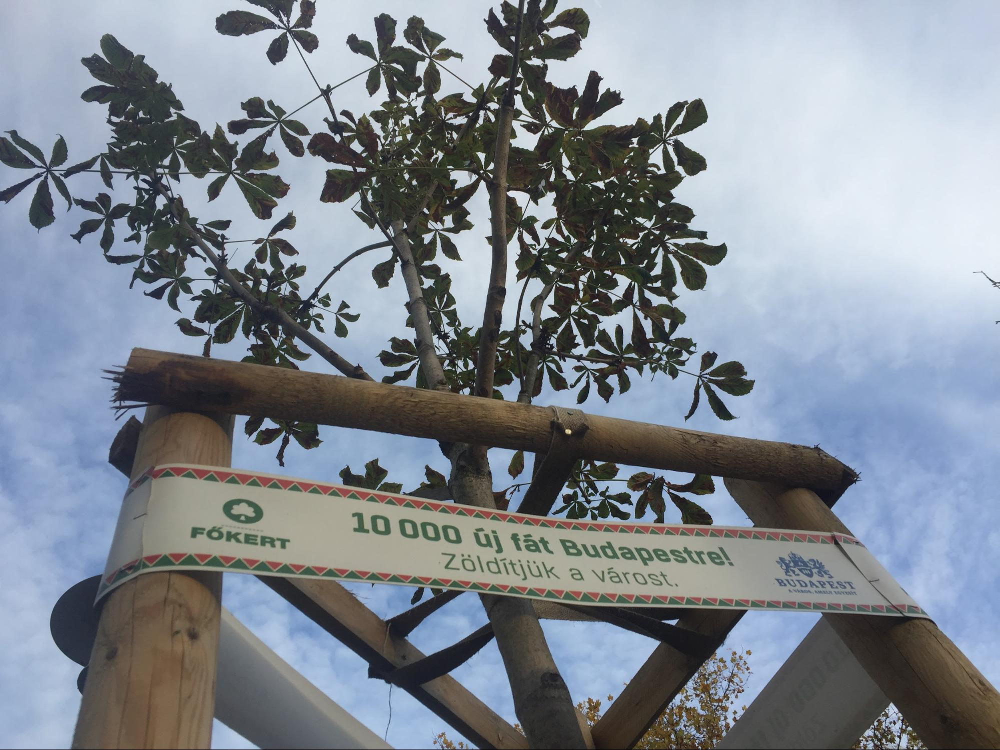

Hogy akadályozhatjuk meg a környezetszennyezést?
Műanyag általi szennyezés
Mivel a műanyag lassabban bomlik le, a következő eszközökkel védekezhetünk ellene
- A cégek gyakrabban gyártanak papírzacskókat, amelyek gyorsabban bomlanak le
- Ha előre elkészült ételt szeretnél műanyag tálak helyett keressél konzerveket
- Inkább papírzacskóid legyenek, mint hogy műanyag zacskóid
Az autók által kibocsáltott anyagok ellen
Az autók is káros anyagokat bocsáltanak ki
- Ebből a szemszögből jobban megéri elektromos autót venni
- Buszozás helyett jobban megéri biciklivel vagy gyalog közlekedni
- Buszok helyett a tömegközlekedésben jobban megéri villamost, vagy egyéb elektromos járműveket használni
A szemetelés helyett
Sajnos a világunkban egyre többen szórják el a szemetüket
- Ha tényleg megakarjuk gátolni a környezetszennyezést, akkor összekell szedni az összes szemetet
A környezet visszaállitása
- A környezet visszaállitása érdekében egyre több fát ültetnek szerte a világon

Lap teteje